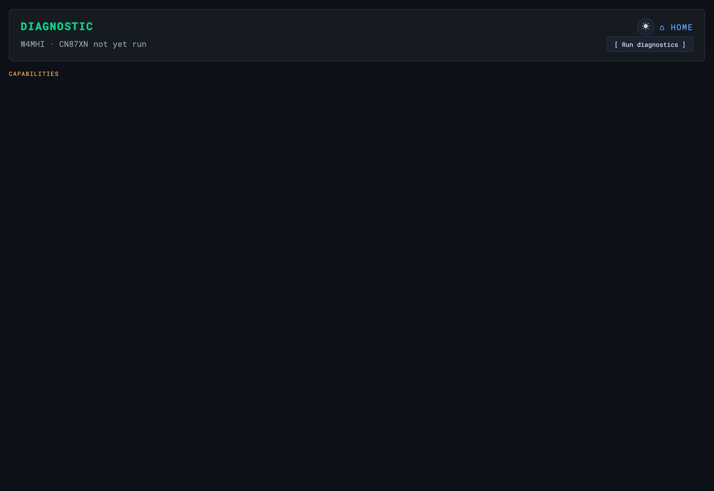

Health Check (doctor)
A headless check that mirrors the browser setup page — confirm a deployment over SSH

scripts/doctor.py is a headless health check that mirrors every verification
the browser setup page performs — useful for post-deploy confirmation over SSH when no
browser is available, or as part of CI. Run it right after setup to confirm the deployment
is healthy before going to the field.
python3 scripts/doctor.py # run all checks
python3 scripts/doctor.py --core # core checks only
python3 scripts/doctor.py --json # machine-readable output
python3 scripts/doctor.py --host 192.168.1.10 # check a remote OASIS instanceCritical checks — these set the exit code
The exit code comes from the critical set: the comms-essential
checks, wherever they sit in the display groups. It is not the same thing
as the CORE group, and --core does not change it.
| Check | Capability | What it verifies |
|---|---|---|
server | ACCESS | The OASIS server answers on its port |
station_identity | ACCESS | A callsign and grid are set — without them passes, bearings and forms are all wrong |
graywolf | APRS_RX | The APRS engine is installed and running |
aprs_feed | APRS_RX | Audio is actually reaching GrayWolf |
rtl_sdr | APRS_RX | The SDR tooling is present and the DVB driver is blacklisted |
pat | WINLINK | The Winlink client is installed and its service is up |
gps | POSITION | A position fix is available |
power | POWER | No under-voltage or throttling |
Everything else — FCC index, maps, disk, Kiwix, Web SSH, cooling, RepeaterBook, forms and the rest — still runs and still reports, but cannot fail the exit code. A station with no maps and no Wikipedia is still a working radio station; one with no callsign set is not.
Exit codes: 0 = no critical check failed ·
1 = one or more did.
Scriptable: use the exit code — 0 means no
critical check failed, 1 means one or more did. So
python3 scripts/doctor.py || echo "station not ready" is the whole CI gate.
--json emits {ran_at, summary, capabilities, fix_now, groups} if you
want the detail; summary holds the ok/warn/fail
counts. Note --core only narrows what is displayed — it never
changes the exit code.
Troubleshooting
| Symptom | Cause & fix |
|---|---|
| A check is red | Each line names what failed and the fix — a missing binary, a stopped service, a bad file. Work them top-down. |
doctor.py vs the Diagnostic page disagree | They run the same checks; a difference is usually a stale browser — hard-refresh. python3 doctor.py is the headless source of truth. |
| A service shows down but the card is green | The probe caught a restart. Re-run the check; if it persists, journalctl -u <service> -e. |